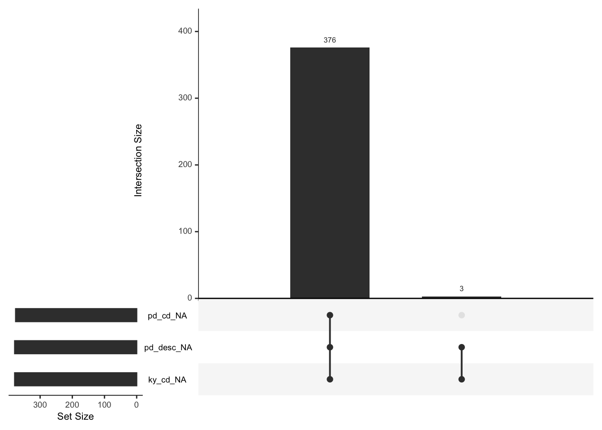
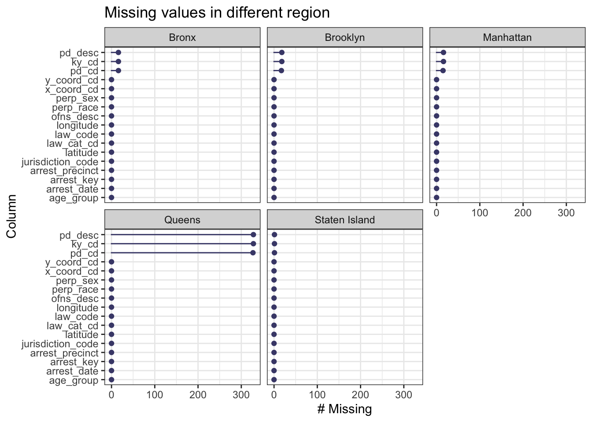
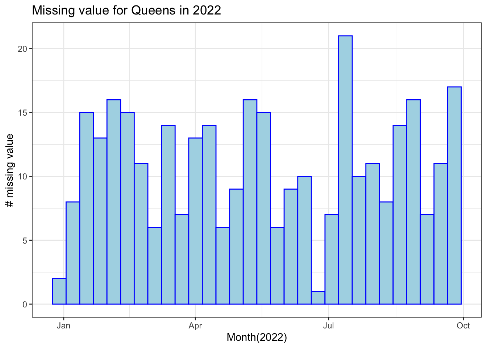

Chapter 3 Data
3.1 Sources
After deciding the topic of the project, all of our team members searched data together to find the most suitable one. We have found that, to identify the crime types, patterns and so on, we need to get some historical crime data. Also, the data released by government or other official department would be more reliable. Here we extract the arrest records data from New York OpenData (https://data.cityofnewyork.us/Public-Safety/NYPD-Arrest-Data-Year-to-Date-/uip8-fykc), which is a free public data source published by New York City agencies and other organizations. The data we will use is collected by the New York Police Department(NYPD), including information about the type of crime, the location, the demographics of perpetrators, and so on. The Office of Management Analysis and Planning extracts and reviews the data every quarter. The data is last updated on Oct 19, 2022.
The dataset is categorized as public safety and contains 141,000 observations with 19 columns in a structured form. Each row represents an arrest effected in New York City by NYPD. The column shows the basic information about the arrest, including the time, location, and level of offense. At the same time, the dataset also contains descriptions of perpetrators, such as gender, age, race, etc. Based on these data, we can well accomplish our research goals.
To fully explored the arrest pattern, a single dataset is not reliable. Therefore, we collected historic data for arrests records from the same platform, New York OpenData, (https://data.cityofnewyork.us/Public-Safety/NYPD-Arrests-Data-Historic-/8h9b-rp9u). This dataset has the same format as year-to-date data, making it easy to compare with each other. However, we found that this historic dataset was only updated on June 9, 2022 lastly, which has been covered by our primal dataset. Therefore, instead of using both datasets, we use only the primal one in our projects.
We can export the dataset in CSV format for offline use from New York OpenData. Then we can import and manipulate the CSV formatted data in R from the local path.
3.2 Cleaning / transformation
First, we import the Year-to-Date, which is from January 1, 2022, to September 30, 2022, NYPD Arrest Data from NYC OpenData, where each row is an arrest effected in NYC by the NYPD with columns includeing information about the type of crime, the location and time of enforcement, and suspect demographics. Through the glimpse of the dataset, we found that this dataset is well-stored and well-structured.
## Rows: 140,564
## Columns: 19
## $ arrest_key <int> 238492853, 238496466, 238498340, 238513835, 23851387…
## $ arrest_date <dttm> 2022-01-01, 2022-01-01, 2022-01-01, 2022-01-01, 202…
## $ pd_cd <int> 258, 244, 792, 109, 112, 339, 114, 101, 105, 665, 77…
## $ pd_desc <chr> "CRIMINAL MISCHIEF 4TH, GRAFFIT", "BURGLARY,UNCLASSI…
## $ ky_cd <int> 351, 107, 118, 106, 126, 341, 344, 344, 106, 126, 12…
## $ ofns_desc <chr> "CRIMINAL MISCHIEF & RELATED OF", "BURGLARY", "DANGE…
## $ law_code <chr> "PL 1456002", "PL 1402000", "PL 265031B", "PL 120050…
## $ law_cat_cd <chr> "M", "F", "F", "F", "F", "M", "M", "M", "F", "F", "F…
## $ arrest_boro <chr> "K", "M", "Q", "B", "K", "K", "Q", "Q", "K", "M", "M…
## $ arrest_precinct <int> 72, 23, 114, 47, 71, 60, 114, 103, 73, 26, 23, 25, 1…
## $ jurisdiction_code <int> 1, 0, 0, 2, 97, 0, 0, 0, 2, 0, 0, 2, 0, 0, 0, 1, 0, …
## $ age_group <chr> "18-24", "25-44", "18-24", "25-44", "25-44", "25-44"…
## $ perp_sex <chr> "M", "F", "M", "M", "M", "M", "M", "F", "M", "M", "M…
## $ perp_race <chr> "WHITE", "WHITE", "BLACK", "BLACK", "BLACK HISPANIC"…
## $ x_coord_cd <int> 984074, 997744, 1010642, 1026480, 1000099, 985372, 1…
## $ y_coord_cd <int> 178984, 228061, 218253, 262584, 178227, 147958, 2143…
## $ latitude <dbl> 40.65795, 40.79264, 40.76569, 40.88731, 40.65586, 40…
## $ longitude <dbl> -74.00063, -73.95127, -73.90472, -73.84727, -73.9428…
## $ geocoded_column <chr> "POINT (-74.000634 40.657949)", "POINT (-73.951265 4…## arrest_key arrest_date pd_cd pd_desc ky_cd
## 1 238492853 2022-01-01 258 CRIMINAL MISCHIEF 4TH, GRAFFIT 351
## 2 238496466 2022-01-01 244 BURGLARY,UNCLASSIFIED,UNKNOWN 107
## 3 238498340 2022-01-01 792 CRIMINAL POSSESSION WEAPON 118
## 4 238513835 2022-01-01 109 ASSAULT 2,1,UNCLASSIFIED 106
## 5 238513876 2022-01-01 112 MENACING 1ST DEGREE (VICT NOT 126
## 6 238513883 2022-01-01 339 LARCENY,PETIT FROM OPEN AREAS, 341
## ofns_desc law_code law_cat_cd arrest_boro
## 1 CRIMINAL MISCHIEF & RELATED OF PL 1456002 M K
## 2 BURGLARY PL 1402000 F M
## 3 DANGEROUS WEAPONS PL 265031B F Q
## 4 FELONY ASSAULT PL 1200501 F B
## 5 MISCELLANEOUS PENAL LAW PL 1201800 F K
## 6 PETIT LARCENY PL 1552500 M K
## arrest_precinct jurisdiction_code age_group perp_sex perp_race
## 1 72 1 18-24 M WHITE
## 2 23 0 25-44 F WHITE
## 3 114 0 18-24 M BLACK
## 4 47 2 25-44 M BLACK
## 5 71 97 25-44 M BLACK HISPANIC
## 6 60 0 25-44 M BLACK
## x_coord_cd y_coord_cd latitude longitude
## 1 984074 178984 40.65795 -74.00063
## 2 997744 228061 40.79264 -73.95127
## 3 1010642 218253 40.76569 -73.90472
## 4 1026480 262584 40.88731 -73.84727
## 5 1000099 178227 40.65586 -73.94288
## 6 985372 147958 40.57279 -73.99596
## geocoded_column
## 1 POINT (-74.000634 40.657949)
## 2 POINT (-73.951265 40.792642)
## 3 POINT (-73.904725 40.765692)
## 4 POINT (-73.8472717577564 40.8873136344706)
## 5 POINT (-73.942878 40.655857)
## 6 POINT (-73.99596126 40.57278637)To transform the dataset into a tidy form for exploratory analysis, we drop the column called ‘geocoded_column’ since this column is a combination of the longitude coordinate as the x coordinate and the latitude coordinate as the y coordinate.
## age_group
## <18 18-24 25-44 45-64 65+
## 4895 24560 81067 27959 2083In addition, we notice that the age groups are not classified evenly. Namely, the age groups are ‘<18’, ‘18-24’, ‘25-44’, ‘45-64’, and ‘65+’, where the range of group ‘18-24’ is only 6, while others’ ranges are 19. However, the number of arrests in the age group of ‘18-24’ is extremely large compared to other age groups. It is worth paying attention to and explicitly exploring that remarkable number in plots. Thus, we keep the categories of age unchanged. Therefore, our dataset is in a tidy form to do exploratory data analysis in R now.
3.3 Missing value analysis
3.3.1 Why analyse missing value?
In this section, we want to know the distribution of missing values in the original dataset. Through missing pattern analysis, we are able to get an overview of the missing logic and determine how to deal with these missing values. Whether to delete them directly or to approach them based on other non-missing values?
3.3.2 Missing pattern
We start by analysis the missing pattern of the whole dataset.

The left-bottom bar chart shows the total number of missing values in each column. The right chart shows the intersection pattern of the missing value. From the chart above, we can find that among 19 column in original data set, only 3 columns (pd_cd, pd_desc, ky_cd) has missing value.
- pd_cd: Three digit arrest internal classification code.
- pd_desc: The description of internal classification code
- ky_cd: Three digit internal classification code (more general category than PD code)Notice the relation among pd_cd, pd_desc and ky_cd, it is easy to understand the consistency of missing value. Since the Keycode is a more general category, if the Key code of an arrest event is unknown, the PD code also remains unknown. Similarly, if the PD code is unkown, we cannot describe it.
3.3.3 Missing borough analysis:

When faceted on borough, we were surprised to find that majority of missing values are derived from Queens.It is probably due to data filing errors in this region, or the peculiarities of some crimes. We wonder if these arrest belongs to same accident or have some relation.

We can propose a hypothesis from the charts above: Arrest data loss occurs throughout the year. There is no peak or obvious pattern, thus missing value is not due to specific incidents or periods, but it is highly likely because of the relatively poor system for arrest categorization in Queens.